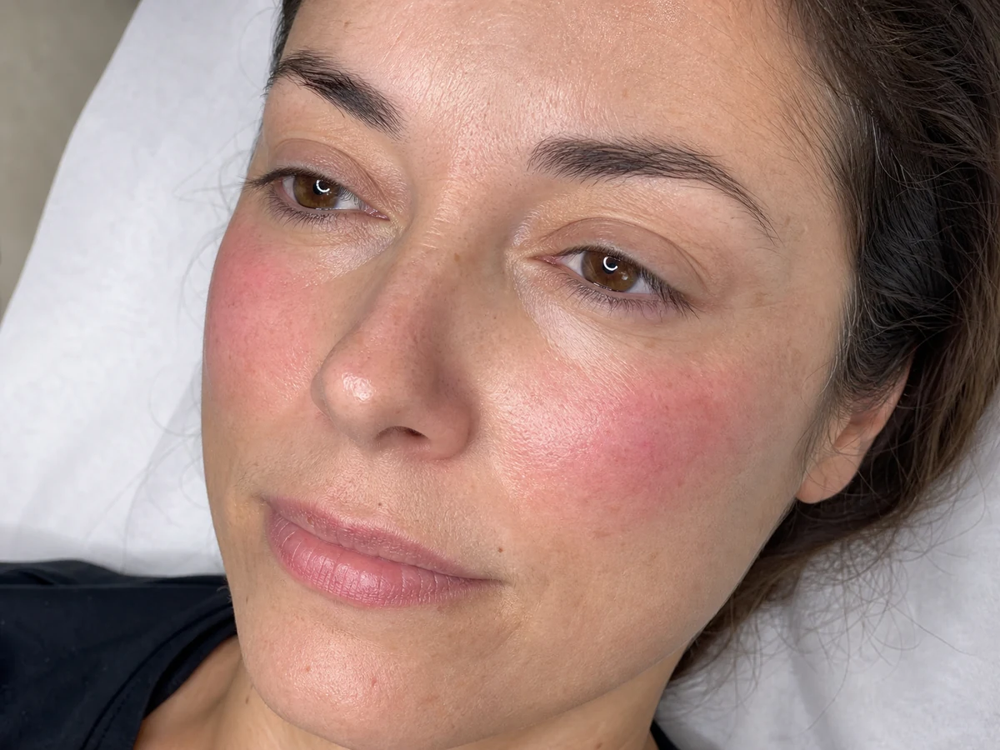

Healthy Glow · Granollers
Micropigmentación Blush
Una técnica facial pensada para aportar un efecto rubor suave, frescura y luminosidad. El tono y la colocación se diseñan según tu piel y la estructura de tu rostro.
Consultar valoración facial
Diagnóstico facial
Un rubor diseñado, no dibujado.
Buscamos una transición suave que se integre visualmente con la piel. Antes del tratamiento valoramos tono, sensibilidad, hábitos y expectativas para decidir si esta técnica es adecuada.
Si buscas definir volúmenes mediante luz y sombra, descubre también el Facial Contouring.
Qué es y cómo trabajamos
Micropigmentación Blush en Granollers: rubor que no se va al desmaquillarte
La micropigmentación Blush deposita un pigmento rosado o melocotón, muy difuminado, en la zona de las mejillas. El objetivo es un aspecto descansado y con color, no un colorete marcado. Elegimos tono, intensidad y colocación según tu piel y la forma de tu cara.
Qué incluye
Precio: a valoración. Depende de la zona, la intensidad y lo que necesite tu piel; te damos el presupuesto cerrado antes de reservar.
¿Para quién es la micropigmentación Blush?
Puede encajar si tienes el rostro apagado o pálido, te pones colorete casi a diario, tu piel está sana en la zona y te gusta un acabado natural.
No lo hacemos, o lo aplazamos, si hay:
- Embarazo o lactancia.
- Heridas, irritación, acné activo, herpes u otras lesiones en la zona.
- Tendencia a cicatrices queloides.
- Tratamientos con isotretinoína, anticoagulantes o quimioterapia, o una enfermedad sin control médico: primero consulta con tu médico.
- Rellenos, peelings o láser recientes en la zona: lo revisamos en la valoración.
Curación y cuidados
Los primeros días el color se ve más intenso y luego se suaviza. Durante la curación conviene no tocar ni rascar la zona, evitar maquillaje sobre ella, sol directo, sauna y piscina, y seguir las indicaciones que te damos por escrito. Es un pigmento semipermanente: se aclara poco a poco y la duración depende de tu piel, la exposición al sol y tu rutina. Por eso valoramos contigo si y cuándo conviene un retoque.
Si buscas definir pómulo y óvalo con luz y sombra, mira el Facial Contouring. Para pecas naturales en nariz y mejillas, la micropigmentación de pecas.
Preguntas frecuentes sobre la micropigmentación Blush
¿Qué es la micropigmentación Blush?
Es una micropigmentación facial que deja un rubor suave y difuminado en las mejillas, como un colorete muy natural que no necesitas aplicar cada día.
¿Cuánto cuesta la micropigmentación Blush en Granollers?
El precio es a valoración, según la zona y la intensidad. La valoración es gratuita y te damos el presupuesto antes de reservar.
¿Cómo elegís el color?
Según el subtono de tu piel y el efecto que buscas. Lo probamos y lo ves en el diseño previo antes de empezar.
¿Sirve si tengo rojeces o rosácea?
La rosácea o la piel irritada activa no son adecuadas para trabajar. Lo revisamos en la valoración y, si no es el momento, te lo decimos.
¿Incluye prueba de alergia?
Sí. Antes de trabajar con pigmento hacemos prueba de alergia y te enseñamos el diseño previo.
¿Dónde se realiza?
Lo realizamos con cita previa en Nohuska Beauty Lab, Avinguda Sant Esteve, 40, Granollers. Tina y Valentina hacen la valoración.
Una consulta por WhatsApp no confirma una reserva. Acordaremos contigo el tratamiento, la fecha y la hora.